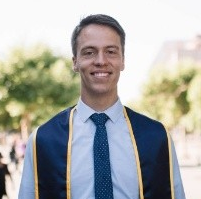

About Aidan
Aidan Quigley embarked on a mission to familiarize himself with a series of programming languages in the spring of 2020. He found himself with a considerable amount of time on his hands due to the outbreak of COVID-19 and an untimely accident while snowboarding. In fashion with the rest of his life he funneled his significant energies into gaining a deeper understanding of programming and expaning his toolset of skills.
Prior to his foray into programming, Aidan studied at the University of California Berkeley which conferred him a degree in Economics and Molecular and cell biology in just three years. He then left the United States for Ecuador where he lived in the small barrio of Nayón just outside the capital city of Quito. For months Aidan immersed himself in the studies of Spanish and Mountaineering returning to the United States with a fluency in big mountain climbing and a working understanding of Spanish language. He then proceeded to pursue a career in Molecular Biology, specifically working on methods of reagent delivery in genome engineering settings, while audibling slightly from mountaineering to rockclimbing.